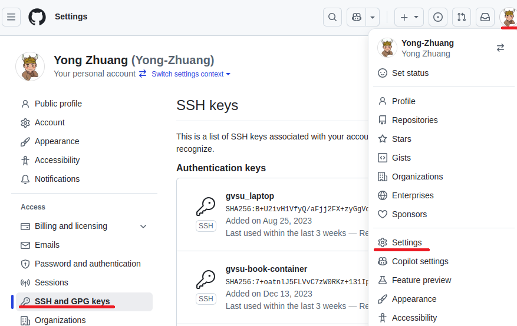
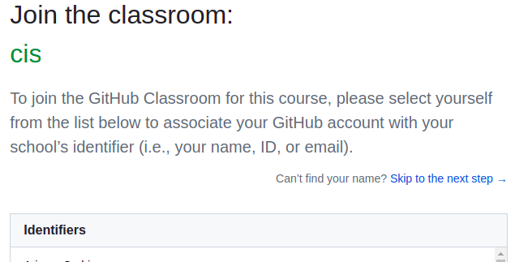
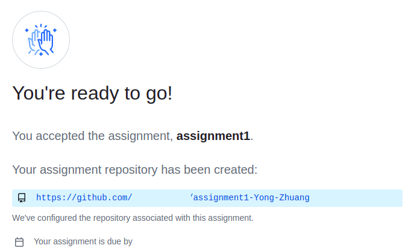
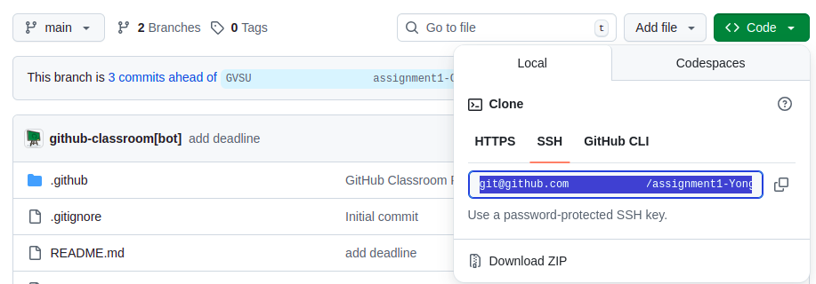
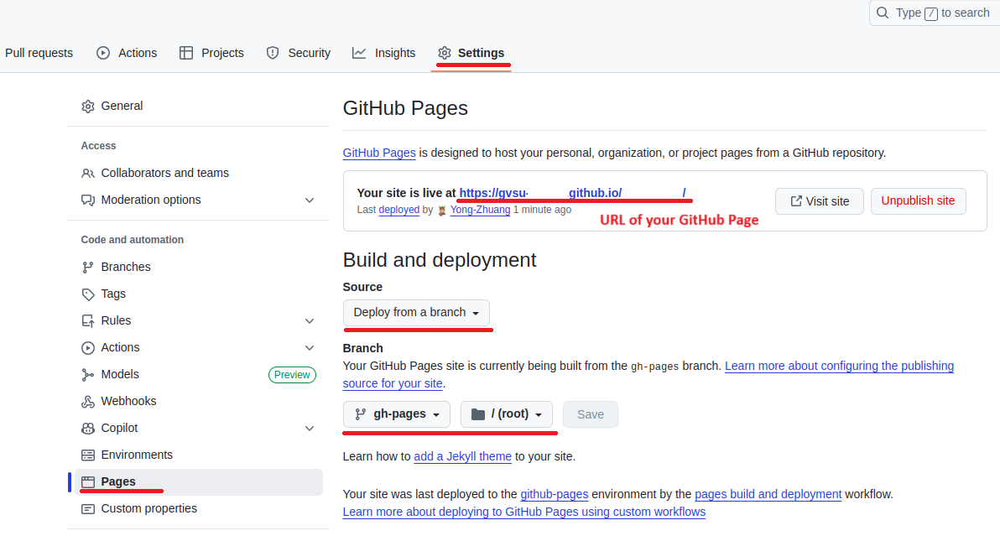

1. CSS Zen Garden#
— CSS Layout & Design
In this assignment, you will create a complete visual redesign of the classic CSS Zen Garden page using CSS only. The HTML structure and content are provided and must remain unchanged. Your task is to demonstrate how modern CSS can transform the same HTML into a visually compelling, well-structured, and responsive layout.
This assignment focuses on layout, styling, and design, not JavaScript or dynamic behavior. You are expected to apply modern CSS techniques for organizing smaller components.
1.1. Objectives#
By completing this assignment, you will practice:
Structuring page layout using CSS Grid
Organizing components using CSS Flexbox
Writing clean, maintainable CSS
Creating a responsive design without modifying HTML
Managing source code with GitHub
Deploying a static site using GitHub Pages
1.2. Best Solutions:#
Bharghav Bolla: Zen Garden | CSS
Benjamin Hannah: Zen Garden | CSS
1.3. Preparation#
IDE Setup: Use VS Code for editing and managing your code.
Development Environment:
NodeJS Environment Setup: Choose one of the following options to set up your NodeJS environment,
Docker Container: Create a Node.js development environment with Docker. For detailed instructions, please refer to the class slides.
Direct Install: Alternatively, you can install NodeJS directly from the NodeJS official website.
In the context of this document, the term
terminalrefers to:Command Prompt: On Windows systems.
Terminal: On macOS systems.
Shell or Bash: Inside a Docker container, depending on the base image of the container.
Verify the installation by execute the command in
terminal:node -v # v14 or newer npm -v # v8 or newer
GitHub Setup:
Create a GitHub account if you don’t have one.
Ensure you can access your GitHub account using an SSH Key. If you haven’t set this up, follow the steps below or check this tutorial.
Open a
terminal. If you haven’t yet configured an SSH key for GitHub on your machine, generate a new one with the following command:ssh-keygen
Navigate to your GitHub account settings(web). Click on
SSH and GPG keysand thenNew SSH key. Paste the public key that was generated in the first step and clickAdd SSH key.
Set up your GitHub username and email in a `terminal``. You can do this with the following commands:
git config --global user.name "Your Name" git config --global user.email "your-email@example.com"
Accept your instructor’s GitHub classroom invitation to set up your project repository.
Select Your Name:

Initialize Your Assignment Repository:

Clone the Repository:

You’re now ready to clone the repository. In yourterminal, use the following command with your SSH repository link to download the repository to your local machine:git clone [YOUR_SSH_REPO_LINK]
Install Required Packages: Execute the following command to install the necessary packages for your project:
cd [YOUR_REPO] npm install
Run a local development server (default port 5173):
npm run dev
Then you can access your project at
localhost:5173in browser.
1.4. Project Files#
You will work with the following files:
index.html(provided)main.css(you write all CSS here)
1.4.1. Important Rules#
Do not modify the HTML structure or content
Do not add JavaScript
Do not use inline styles
Do not use CSS frameworks (Bootstrap, Tailwind, etc.)
The only allowed HTML change is linking your CSS file:
<link rel="stylesheet" media="screen" href="main.css" />
All visual changes must be done in main.css.
1.5. Requirements#
1.5.1. 1. Page Layout (CSS Grid — Required)#
Use CSS Grid for the overall page structure
Create a clear layout (e.g., header / main / sidebar / footer)
Layout must fill the browser width
No horizontal scrolling
1.5.2. 2. Component Layout (Flexbox — Required)#
Use Flexbox for at least one of the following:
Navigation links
Sidebar lists
Grouped content sections
Flexbox should be used intentionally, not just once to satisfy the requirement
1.5.3. 3. Typography & Readability#
Clear heading hierarchy (
h1,h2,h3)Appropriate line height and spacing
Text must be readable on all screen sizes
Choose fonts thoughtfully (system fonts are fine)
1.5.4. 4. Visual Design#
Consistent color palette
Intentional spacing and alignment
Sections visually separated
Avoid default browser styling
1.5.5. 5. Responsiveness#
Page must work on both desktop and narrow screens
No overlapping content
No clipped text
Images (if any) must not overflow containers
1.6. Grading Rubric#
Category |
Points |
|---|---|
GitHub setup, commits, push, & GitHub Pages deployment |
15 |
CSS Grid layout (structure, responsiveness, no scroll) |
20 |
Flexbox usage (navigation/components) |
10 |
Typography & readability |
15 |
Section styling & layout consistency |
15 |
Visual design & aesthetics |
15 |
Code quality & organization |
10 |
Total |
100 |
1.7. Deliverables#
Deploy your web application using the following commands in your
terminal:npm run build npm run deploy
Github Page Setup
Set up your GitHub repository for GitHub Pages deployment. Follow the steps shown in the image below:

.Your web application will be accessible at the URL: gvsu-cis658.github.io/YOUR-REPO
Submit the URL of your GitHub Page in Blackboard.